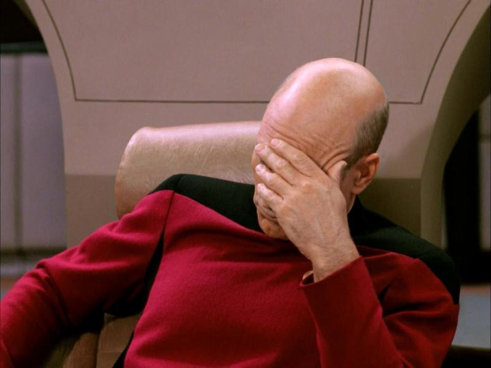

Fuck Kotaku
Four days ago I published a bunch of references to 2006 as a satire on the absurdity of the 2016 timeline, where incredibly stupid predictions more-or-less came true, such as Star Wars 9 making grown men cry and having the means to upload our virtual reality anime personas into the Borg. One of the predictions was about Zelda, which I will now post here to avoid the threat of writing anything original:
“This is the Nintendo 64 all over again: Nintendo got too invested in their gimmicks and released yet another dead console that’ll get clown stomped by the competition. At least they abandoned that cartoon Wind Waker business going on. Everyone knows you can’t beat Ocarina of Time, but Twilight Princess will still go down as one of the best Zelda games ever made.”
It did not.
Just to confirm I wasn’t full of shit about a games series I don’t care about and have barely played since I was a child, I typed “BEST ZELDA GAMES” into DuckDuckGo, in “cruise control for cool” mode as is the case for enthusiastic demands for answers to unimportant questions. Which game featuring a linear and predictable dungeon progression with a generic Hero’s Journey plot and terrible console-specific gimmicks without any lasting legacy to games as a medium since 1998 do you want to play? Ooh, I know! I’ll just play Ocarina of Time for the seventh time, since that was the only game that mattered! Yes, I am aware that every single game Nintendo releases sells fifty million copies and gives the Japanese executives cause for celebratory bar crawls and zen-like drunken wifebeating. But whenever the Miyamoto Guildpact threatens to get their mouths off their cocks and release something exciting like Pikmin or F-Zero, the franchise dies out and another housewife gets their glasses knocked off their face, as is against ancient Japanese tradition.
And one of first results was this Kotaku article titled “The Legend of Zelda Games, Ranked From Worst To Best”. I knew it was going to be fucking shit. I had no disillusions that anything published by Kotaku is going to be fucking shit. You can already tell from the title, where they decapitalised “of” but not the additional prepositions “from” and “to”. While the rules for American-style title casing is hellish and bad ungood, if you’re going to throw out the stupid convention, could you replace it with a convention? Like capitalising everything instead of whichever words were born on a Tuesday under a full moon with a star-shaped birthmark between their buttcheeks? I’m sure they know about buttcheeks, since their parent company Gawker published the Hulk Hogan sex tape out of no greater good than those sweet advertising dolars. Oh, wait. Gawker is dead now. Because Hulk Hogan killed them. For publishing his bum.
I knew it was going to be fucking shit, but that’s part of the charm, isn’t it? It’s like a car crash in slow motion: it’s like I’m watching Kotaku fly through a window. It’s something you don’t have to think about. Don’t get me wrong, games “journalism”... you see I put “journalism” in scare quotes because it’s not journalistic and is also scary... is fucking shit in general. Some of the other links I was served are from IGN, Nintendo Life and GamesRadar+ (games radar plus?). The large freelancer base endemic to games reviews means there is no consistent viewpoint, culture, or philosophy inherent to any of these publications beyond appealing to the broadest possible audience with inoffensive and artistically dead prose that puts forth no opinions, challenges no preconceptions, and does nothing beyond provide the bare-level general-audience basic façade of what a review should, in theory, in a textbook manner, be written as. The authors are nobodies. The prose is interchangeable. And there is nothing original or interesting that you will gain from choosing one publication over another: they’re all throwing slop into the pig’s troth, and we, the gaming audience, are feasting.
In this landscape of consistently inessential Bachelor Chow prose, it brings me joy to see a website have the courage to well and truly suck. Even among an industry renowned for its non-ability to offer critical thought on a medium that is so fraught with exploitative business practices and by-the-books trend-chasing copy-and-paste triple-A prolefeed, Kotaku stands out not only for bravely offering no strong opinions about a man spending $62,000 in RuneScape 3 transactions - because the industry has deftly dodged gambling regulations which make it possible for anyone to spend sixty-two thousand cunting dollars in RuneScape cunting 3 - but also in offering no strong opinions on an article that lists ranks the supposedly best Zelda games in order of quality. Which is, as you might guess, an endeavour that demands some sort of strong opinion. Because it is a critical ranking. It is games criticism. Something that requires criticising.
First of all, fuck the Zelda article. It’s dogshit. Just look at the author’s avatar. Look at it! This dude looks just like the soyboy meme! This is the type of profile picture you dig up from Facebook to sarcastically respond to someone on 4chan and imply their argument is invalid because they may or may not look a certain way, all while the person posting the picture rants about (((International Bankers))) funding Israeli pornography like BLACKED to cuck alpha male interests and defraud MAGA through the transgender Soros Cartel, which is why they can’t get laid. And this “he look dumb therefore he dumb” argument would be fucking stupid of me to put forth, if not for him having the same boring, basic, unelaborated interests that the Nintendo Switch soyboy stereotype puts forth. He looks like the stereotype, he acts like the stereotype, and his profession is the stereotype because this man is a fucking Kotaku editor! I didn’t even know they had more than one! What the hell do these people get paid to do all day? Their writing is shit, their articles are shit, and everything that touches Kotaku is fucking shiiiiit!
Kotaku is beyond parody. We all know this, right? And if you don’t know, now you know, because I said so, and I’m right! The thing about websites with extremely low standards and a culture that doesn’t strive for any higher purpose beyond appealing to the lowest class of scum-sucking maggots that inhabit our fertile lands and making that sweet advertiser revenue so all their employees can pat themselves on the back and be proud of themselves for their contributions to games as a medium (snort) is that by virtue of their very existence, they’re beyond being parodied, because there is no low they will not stoop to that gives any mockery any more embarrassment than Kotaku’s mere operation. The front page of Kotaku is a greater insult to its role in games media than any Hard Drive article can ever achieve. Its existence is the insult. And to put it in a truism: you need a soul before you can be shamed.
I’m not going to argue the Zelda rankings in-depth, because I have access to exciting entertainment outside the incredibly limited artistic breadth that Nintendo deliberately prevents themselves from creating in order to appeal to as broad and normified as possible and audience which I am willing to ignore in favour of discussing games that deserve further comment beyond basic notions of functionality and an ill-defined notion of what engenders “fun”, and also am not ten years old, and so I do not care. Maybe Ocarina of Time is worse than that holding pattern 3DS game that nobody outside of Nintendo’s sweat-drenched fanbase gave a shit about on release and have demonstrably gave no shits about in the seven years occupying its place in space and time. I think Wikipedia is taking the piss on that one:
“The audio, dungeon and puzzle design, open structure, and level of difficulty were praised by critics. The introduction of features such as the wall-merging mechanics and item rental system were well received, with reviewers complimenting how well they integrated with the existing gameplay formula. The game also received multiple awards and nominations”.
This is the type of shit I’d write to take the piss out of how WikiProject Video Games covers critical assessments. All the first sentence is telling me is that critics are unable to come up with more specific analysis of the means with which games are created other than saying that the elements which Nintendo is inoffensively good at creating are inoffensively good without further elaboration as to why they are good beyond a general cultish understanding that good game design is good because it is good and this is the level of artistic analysis that Roger Ebert died of cancer for. Also, the fucking item rental system? Yeah, out of all the Zelda innovations, fucking item rentals are going to be copied by developers until the end of time. And of course it was nominated for multiple awards. Every fucking Nintendo first-party title is nominated for awards, almost as if publication awards are propped up by editors as a means to sell advertisements to a general audience rather than as a legitimate curation of the most innovative and exciting titles released last year throughout the entire medium of games on all platforms and by all developers.
Let’s get back to the Zelda thing (which is here in case you haven’t clicked your greasy mitts onto this shitscram), because I’m not yet thoroughly ashamed of the world we live in and the disgrace to the mediums I’ve spent years and years discussing. Let’s start at the top, with the disclaimers, because a retrospective list article needs a fucking spin doctor. That’s how all great orators start their speeches, don’t you know? “Four score and seven years ago our fathers brought forth on this continent, a new nation - or maybe a small collection of villages at the time - conceived in Liberty - whatever that means to you - and dedicated to the proposition that all men are created equal - except for the Negroid race, who we have agreed are not equal, because come on guys”.
Reading this article is taking all the manly, testosterone-fueled bravado I learned through great writers past and giving it a nice sluuuurp through the ballsack and turning all the hair on my chest into a barren landscape as smooth as a baby’s ass. First disclaimer: “I’m skipping the CD-I games, because come on”. Yes, reader, if you wanted all the Zelda games, you can go fuck yourself. Despite this, you know, being a fucking Zelda retrospective. Is the author so incompetent that he doesn’t understand part of the joy of these articles is in taking a diarrhea dump on shitty games in a way that James Rolfe would be shocked at, or is he so fucking lazy that this mighty, towering, Odyssean epic of an article, clocking in at an unbelievable 1,300 words, was too much for him to handle and so skipped out on writing the extra fifty words that would mentally exert his brain beyond the limit of human comprehension and cause him to rip his consciousness asunder while attempting to weave together the physics-defying threads of logic that would allow us to solve the 10,000-year-old question of why Wand of Gamelon was a bad game? This man is an editor, by the way. A fucking editor. Fuck me.
He goes on:
“I’m also skipping Four Swords Adventures, because I haven’t played it.”
He’s skipping it because he hasn’t played it.
You see, he can’t review the game because he hasn’t played the game.
He’s ranking all the Zelda games even though he hasn’t played all the Zelda games.
His rankings are also entirely based on his opinions, and do not reflect the opinions of Kotaku’s entire staff. I know this because his third disclaimer says: “These rankings are entirely based on my opinions, and do not reflect the opinions of Kotaku’s entire staff. (Stephen disagrees vehemently with this list.)”. Who the fuck is Stephen?
There’s more, because yes:
“These rankings DO take aging into account. The two NES games have not aged well.” Jesus fucking Christ, dude. I saw a post on Reddit which said that a teenage girl who seduced and killed Nazis “was no better than they were” and that was less of a bitch-ass opinion that what you’ve presented here. It’s one thing to be wrong. It’s another thing to go into exhaustive detail in an attempt to defend your wrongness. But all of that is on a whole ’nother planet compared to being so lazily wrong that you call the original Zelda game poorly-aged despite it being one of the most interesting and adventurous games on the NES platform to this date. Hey, what about Ocarina of Time’s atrocious movement controls, or Minish Cap having a screen resolution the size of a postage stamp? Will you call those poorly-aged as well, or will you sit there making whiny little bitch noises because old games are old and old is bad and burbly burbly boo?
And for the author’s final disclaimer, which always present images of confidence in the reader’s mind: “I had a VERY hard time sorting out the top two. (Note: I wrote that before Breath of the Wild came out.)”.

In just 85 words I was transformed from a young writer with unfounded hope for the world into a suicidal cynic with no greater hope than dying in his sleep to stop the suffering he lives each day. The author of this article is one of the greatest writers to ever exist in human history. Nobody else captures the unending pain inherent to existence like this Kotaku editor does. This article is art. This is a postmodern masterpiece. This is a story that every literate person needs to read. Because so long as we hold onto any nascent optimism, masters-at-work like Mr. Soy will teach us the cruel facts of reality: there is no hope. There is nothing in store for you. Life is empty, and I am the harbringer of death.
Ave Maria, gratia plena, Dominus tecum.
Benedicta tu in mulieribus, et benedictus fructus ventris tui, Iesus.
Sancta Maria, Mater Dei, ora pro nobis peccatoribus, nunc et in hora mortis nostrae.
Requiescat in pace. Amen.